공허 위의 디오라마 전장
카드 원화 전장을 무대 위에 선 SD 유닛으로 바꾸는 시안입니다. 배경과 캐릭터는 현재 게임의 원화를 그대로 썼습니다. SD는 ChatGPT ImageGen으로 새로 생성할 예정이며, 지금 화면의 SD는 스탠딩 원화를 머리 확대·몸 축소로 변형한 임시 프록시입니다. 판정·행동서열·AV·피해 콜백은 그대로 두고 화면에 보이는 층만 교체합니다.
재생 순서: 일반행동 → 정예 재규어 전사 공격(전열 탱커 보호막) → 수르트 초월기 컷인과 전열 광역. SD·하단 카드·행동 순서 칩·피해 집계 줄 중 하나에 마우스를 올리면 함께 강조되고 이름·원소·한줄소개가 뜹니다. 위 전환으로 기존 지그재그·발밑 묶음과 비교할 수 있습니다.
진형 배치 · 세븐나이츠식 제안
전열과 후열을 각각 바닥 원근을 따라 기울어진 한 줄로 세우고, 두 줄 사이를 크게 띄웁니다(중앙에서 전열 190px, 후열 540px). 같은 줄 안에서는 지그재그를 쓰지 않습니다. 바닥에 두 줄을 옅게 긋고, 준비 화면에서는 진하게 표시하며 “전열·후열” 이름을 붙입니다. 격자 좌표(x −2…2, y 1…4)와 전열 공석 시 후열을 당기는 규칙은 그대로입니다.
캐릭터 정보 · 스타레일식 하단 HUD
양 진영을 모두 화면 아래에 초상화 카드로 늘어놓습니다. 아군은 왼쪽, 적은 오른쪽, 재보(공용 포인트 마름모 12칸)는 가운데이며, 각 진영의 전열 카드가 가운데 쪽에 와서 무대 배치와 방향이 같습니다. 카드는 초상화 원화를 크게 보여 주고 아래에 체력판(적은 강인도 포함), 바깥쪽 위 모서리에 초월 원을 겹칩니다. 초월이 충전되면 카드가 원소색 테두리로 빛나며 위로 뜨고, 행동 중인 유닛은 더 높이 뜹니다. 전장에는 SD·행동 고리·피해 숫자·상태 글자만 남아 가림이 없습니다. 카드를 가리키면 해당 SD가 강조됩니다. 위 전환의 “양진영 하단 바”는 이전의 작은 카드 안입니다.
ImageGen SD 1차
Codex가 ChatGPT ImageGen으로 스탠딩 원화를 참조해 뽑은 IDLE 다섯 장입니다(총 15회 생성). 위 전투 화면의 SD 스타일 전환에서 “SD 1차”가 이 그림이고, “프록시”로 바꿔 비교할 수 있습니다.
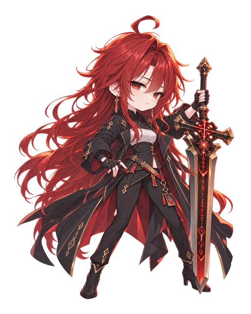
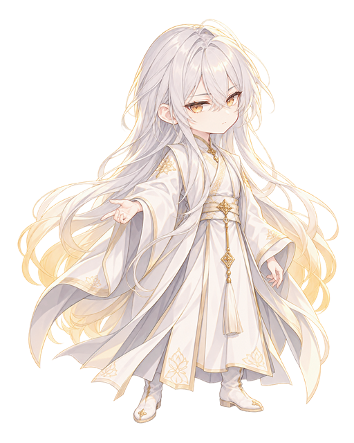
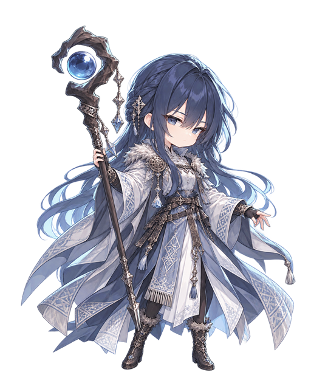
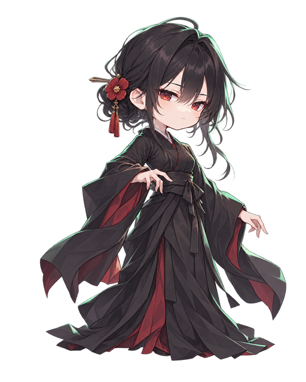
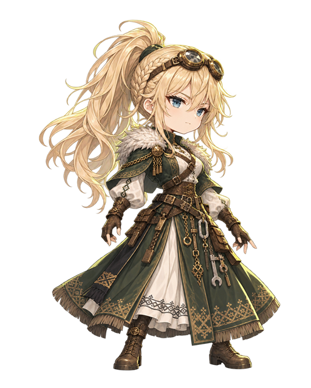
Root 검수 · 1차 HOLD
톤은 합격선이지만 머리가 커서 약 2.5등신이고 눈이 커 어려 보이며, 림라이트 번짐과 머리 크기 불균일이 있습니다.
두 스타일 비교
같은 원화와 같은 실루엣 3요소로 스타일만 달리해 뽑았습니다(총 17회 생성). 프롬프트에는 게임 이름 대신 시각 특징만 적었습니다. 위 전투 화면의 SD 스타일 전환에서 같은 장면으로 비교할 수 있습니다.
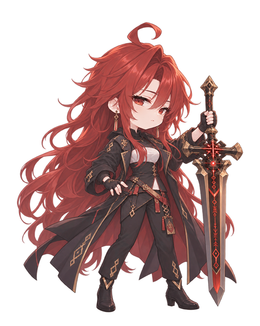
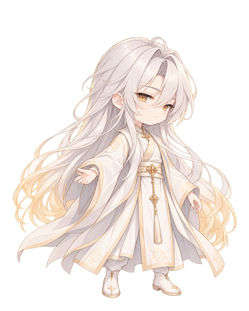
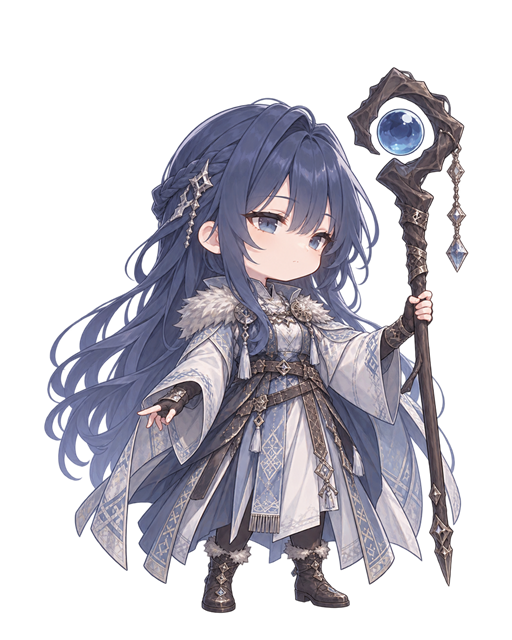
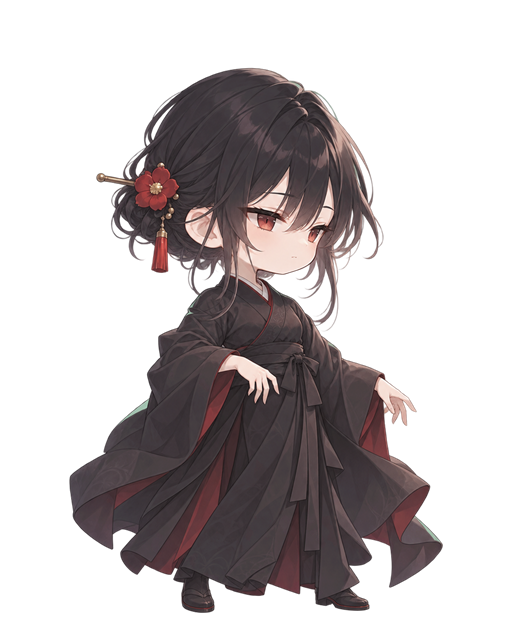
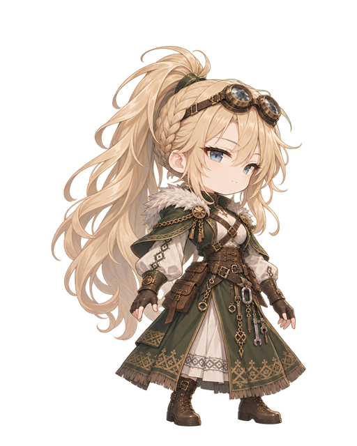
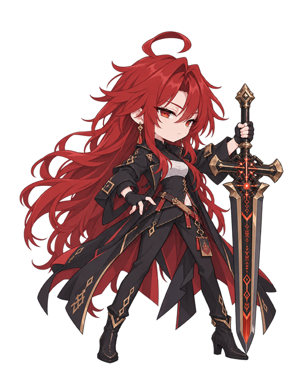
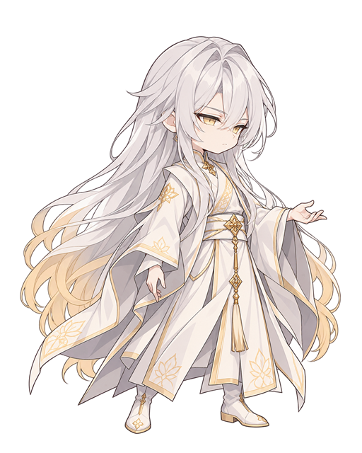
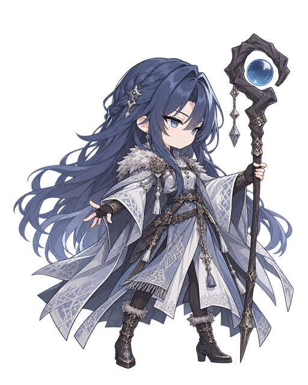
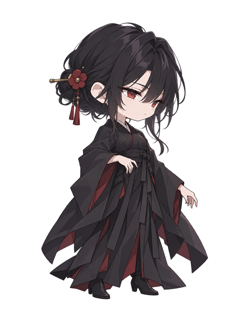
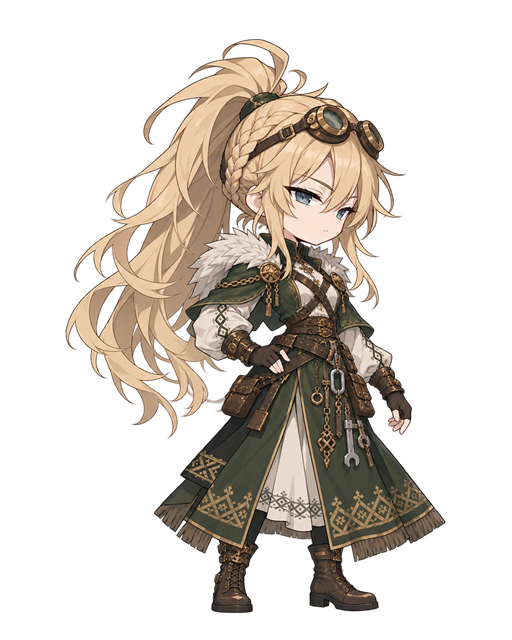
Root 검수 · 2차 HOLD
1차보다 나아진 점: 다섯 명 모두 발끝이 보이고(시 포함), 흰 번짐이 줄었고, 한 스타일 안에서 머리 크기가 고르게 맞았습니다. 남은 문제: ① 두 스타일의 차이가 작습니다. B가 선이 진하고 명암 경계가 조금 단단할 뿐, 비율·얼굴·눈 크기가 A와 거의 같아 “날렵한 3등신”이 나오지 않았습니다. ② 두 스타일 모두 눈이 여전히 커서 원화보다 어려 보입니다. B를 확실히 가르려면 머리 비율을 전체의 1/3 이하로 고정하고 눈 높이를 머리 높이의 12% 안으로 지정해 다시 뽑아야 합니다.
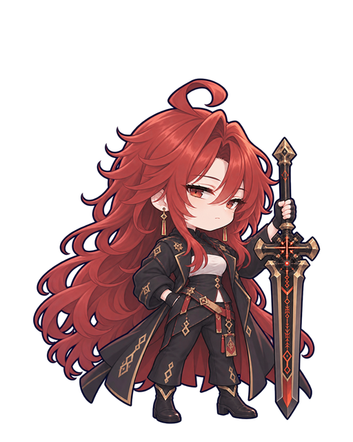
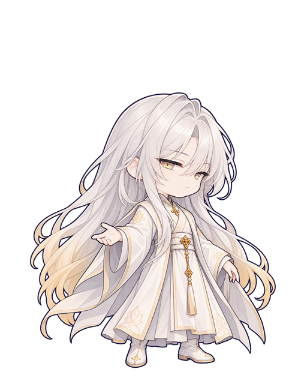
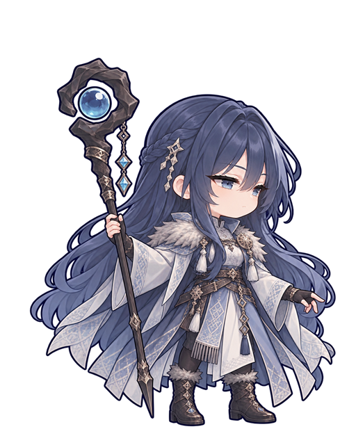
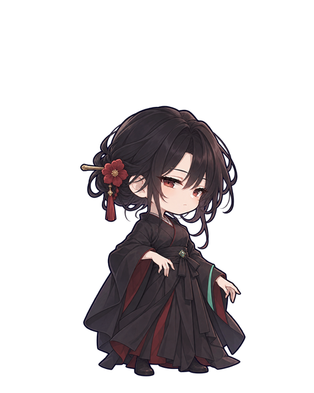
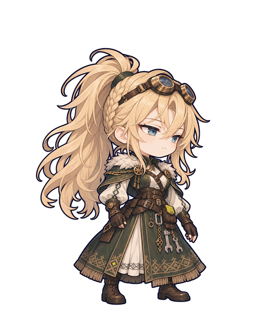
Root 검수 · 3차(스타일 C) 톤 합격 후보
요청한 두 요소가 제대로 들어갔습니다. 외곽과 주요 형태에 굵기가 고른 남색 먹선이 둘려 작은 크기에서도 실루엣이 가장 또렷하고, 원소색은 의상·무기 안쪽 한두 곳에만 칠해져 번짐이 없습니다. A의 부드러운 명암과 따뜻한 색은 유지됐고, 눈이 작아져 1·2차보다 원화의 차분한 인상에 가깝습니다. 남은 점: ① 시·세이는 캔버스 안에서 그림 자체가 작게 생성되어(머리 위 여백 24~27%) 전장에서는 같은 키로 맞추지만 원본 해상도가 낮습니다. ② 스카디의 별 장식·땋은 머리·문양이 원화와 조금 다릅니다. 방향을 C로 정하면 이 두 가지만 보정해 나머지 포즈로 넘어가는 것을 권합니다.
Root 검수 · 스타일 C 눈·표정·자세 HOLD

위는 초상화 원화, 아래는 스타일 C입니다. 눈: 다섯 장 모두 같은 반쯤 감긴 아몬드 눈, 같은 위 눈꺼풀 선, 같은 아래쪽 시선, 같은 작은 일자 입입니다. 원화는 시(둥근 눈·옅은 미소), 세이(눈웃음), 수르트(처진 눈·살짝 벌린 입), 스카디(크고 맑은 눈), 프레이아(또렷한 눈·자신감 있는 미소)로 서로 다릅니다. 원인은 3차 프롬프트가 “작고 차분한 반감은 눈”을 다섯 명 공통으로 지시한 것입니다.
자세: 수르트를 뺀 네 명이 정면에 가까운 3/4, 어깨너비로 벌린 발, 한 팔을 옆으로 내민 같은 자세입니다. 무게 중심·고개·어깨 기울기도 같아 실루엣이 무기 유무로만 갈립니다. 원화 자세와 역할에서 가져와야 합니다: 시는 손을 모은 정적인 자세, 수르트는 대검에 기대고 손을 뺨에, 스카디는 지팡이를 양손으로 세워 쥠, 프레이아는 한 손을 허리에 대고 체중을 한쪽에.
다음 회차: 공통 문구에서 눈 모양·표정·자세를 빼고 캐릭터별 문장을 넣습니다. 초상화를 얼굴 참조로 함께 첨부하고, 스타일 기준본은 선·채색에만 쓰도록 명시합니다. 검수는 얼굴만 잘라 놓았을 때와 실루엣만 칠했을 때 다섯 명이 구분되는지로 봅니다. 상세: sd_gen/review_c_eyes_pose.md
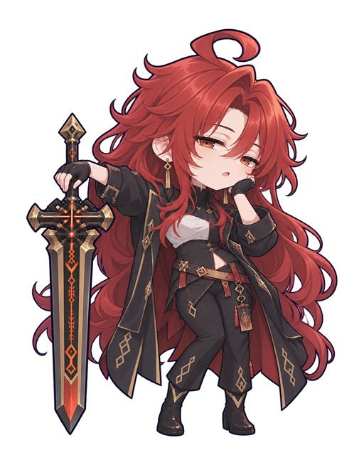
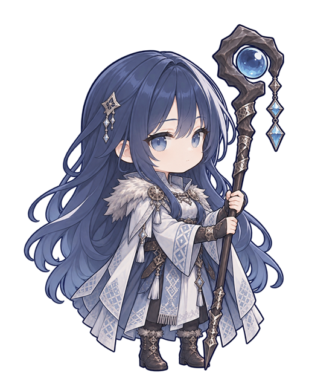
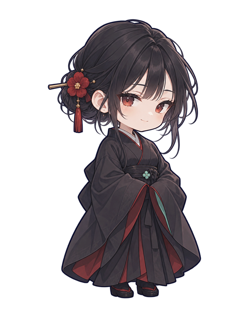
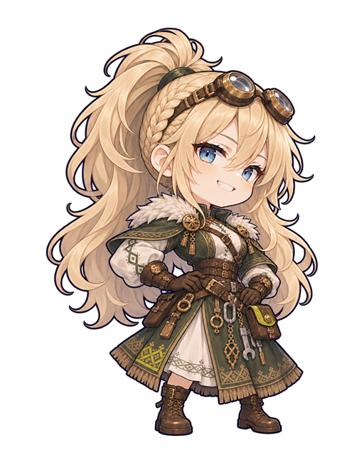
Root 검수 · C2 눈 PASS · 자세 부분 HOLD

눈·표정 PASS. 다섯 얼굴이 서로 구분되고 각자 원화를 닮았습니다. 시는 둥근 눈과 옅은 미소, 세이는 아래 눈꺼풀이 올라간 눈웃음, 수르트는 처진 눈과 살짝 벌린 입, 스카디는 크고 맑은 눈과 다문 입입니다. 프레이아는 이가 보이는 웃음으로, 원화의 옅은 미소보다 한 단계 밝지만 성격(자신감)에는 맞습니다.
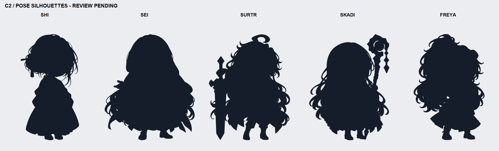
자세 부분 HOLD. 색이 있을 때는 다섯 자세가 모두 구분됩니다. 단색 실루엣으로 보면 시(좁고 곧은 형태), 수르트(왼쪽 대검), 스카디(오른쪽 지팡이)는 바로 읽히지만, 세이와 프레이아는 머리카락 덩어리가 팔을 덮어 둘 다 큰 둥근 형태로 보입니다. 세이의 내민 손은 끝만 조금 나오고, 프레이아의 허리 위 팔꿈치는 보이지 않습니다. 전장의 작은 크기에서는 실루엣이 먼저 읽히므로, 두 명만 팔을 머리카락 밖으로 꺼내고 머리카락을 등 뒤로 모아 다시 뽑기를 권합니다. 나머지 세 명과 눈·표정은 이대로 확정해도 됩니다.
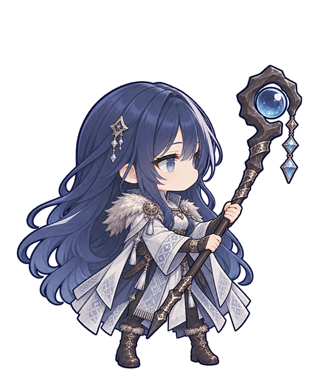
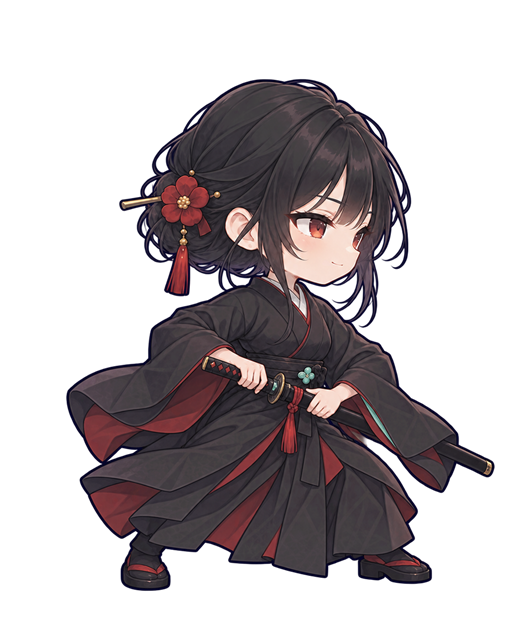
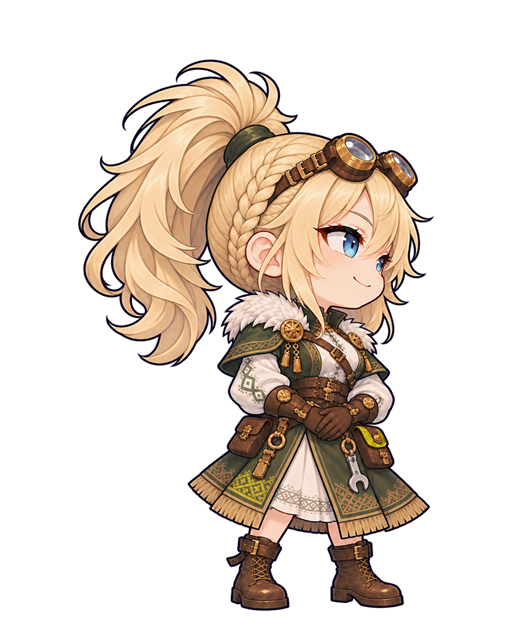
Root 검수 · C3 방향·실루엣 PASS · 소소한 보정 3건
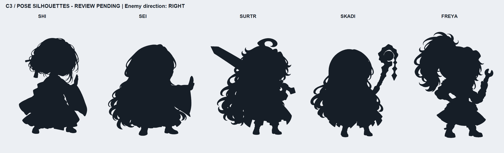
방향 PASS. 다섯 명 모두 얼굴·시선·코끝이 화면 오른쪽(적)을 향하고, 카메라를 보는 눈이 없습니다. 몸통도 오른쪽으로 돌았습니다. 실루엣 PASS. 단색으로 칠해도 시(낮춘 자세·세운 손), 세이(오른쪽으로 뻗은 팔), 수르트(어깨 위 대검), 스카디(오른쪽 지팡이), 프레이아(높은 포니테일·허리 팔꿈치의 빈틈·렌치)가 바로 구분됩니다. C2에서 겹치던 세이·프레이아가 해결됐습니다. 자세: 수르트는 원화 자세를 버리고 대검을 어깨에 멘 자연스러운 대기 자세가 되었습니다.

눈·표정 유지. 각도만 바뀌고 C2의 캐릭터별 눈·표정이 남았습니다. 소소한 보정: ① 시의 세운 손이 “멈춰” 손짓처럼 보여 검사의 손날로 덜 읽힙니다(손날을 비스듬히, 손가락을 붙여서). ② 스카디의 구슬이 위를 향해 적 쪽을 겨누는 느낌이 약합니다(지팡이 끝을 오른쪽으로 더 기울여서). ③ 시의 눈이 C2보다 조금 커졌습니다. 세 가지 모두 IDLE을 확정하는 데 막히는 문제는 아니며, 나머지 포즈를 뽑을 때 함께 고칠 수 있습니다.
IDLE · WINDUP · STRIKE · HIT · DOWN
사용자 확정 C3를 기준으로 4포즈씩 20장을 생성했습니다. 시는 발도술 검사로 정정해 IDLE부터 다시 그렸습니다(맨손 IDLE은 보관). 위 전투 화면에서 공격자는 WINDUP → STRIKE, 피격자는 HIT 프레임으로 실제로 바뀝니다.

Root 검수 · 포즈 세트 · 사용자 확정(2026-10-29, 보류 3건은 기록만)
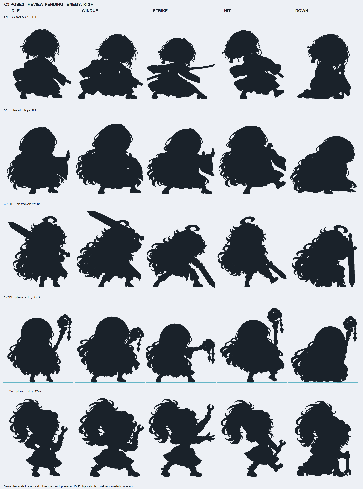
좋은 점. 다섯 명 모두 5포즈에서 같은 인물로 읽히고(머리·의상·얼굴 유지), 적 쪽을 향합니다. HIT은 눈을 감고 뒤로 젖히며, DOWN은 무기를 짚고 한 무릎을 꿇어 한눈에 읽힙니다. 수르트(어깨 메기 → 감아올림 → 오른쪽 아래 내리베기)와 시(발도 대기 → 칼집에서 한 뼘 → 완전히 뽑아 오른쪽으로 뻗음)가 가장 잘 나왔습니다. 프레임마다 발 기준선이 캐릭터별로 같아 교체해도 튀지 않습니다.
HOLD. ① 스카디 STRIKE: 머리가 다른 프레임보다 작고, 왼쪽 머리카락이 캔버스에 잘리며, 지팡이 머리 장식이 IDLE과 다릅니다(Codex도 FAIL로 표시). ② 세이 STRIKE가 IDLE과 실루엣이 거의 같습니다. 두 손을 앞으로 더 크게 내밀고 몸을 기울여야 정점으로 읽힙니다. ③ 프레이아 WINDUP이 IDLE과 거의 같습니다. 렌치를 어깨 뒤로 확실히 당겨야 합니다. 이 세 장만 다시 뽑으면 됩니다.
참고. 시의 IDLE과 WINDUP도 실루엣이 비슷하지만, WINDUP은 0.14초만 보이고 칼날이 칼집에서 나와 있어 허용합니다. 발 기준선은 캐릭터마다 다릅니다(캔버스 아래에서 2.5~7.7%). 게임 등록 때 캐릭터별 발 좌표를 데이터로 두면 되므로 다시 맞추지 않습니다.
소환수 배치
칸 없는 소환수를 주인 뒤쪽 바닥에 SD로 세우고, 실제 키트 순서대로 움직이는 장면입니다. 다수형(우치 분신 최대 3기)과 동반형(로키의 펜리르), 표시 전용 동반(오리온의 시리우스)을 같은 무대 규칙으로 맞췄습니다.
자리 · 동반형은 뒤, 다수형은 소환술사별 고유 배치(주인 둘레)
소환수는 칸을 차지하지 않습니다. 동반형(펜리르·시리우스)은 주인 뒤쪽 바닥 한 자리에 서고 주인보다 뒤에 그립니다. 다수형은 소환술사마다 고유 배치를 갖습니다 — 우치 분신(주인 × 0.55)과 이시스 수호령(× 0.45, 떠 있음)은 모두 주인과 같은 깊이에서 주인 둘레 좌우로 넓게 펼칩니다. 한 기는 적 쪽 앞, 두 기는 열 사이 빈 공간(뒤쪽)으로 가서 서로 뭉치지 않고, 주인 다리 곁과 같은 열의 위아래 칸(다른 유닛의 머리·몸)은 비워 가리지 않습니다. 적 쪽으로는 화면 중앙선을 넘지 않고, 화면 가장자리 140px 안에 들어오는 슬롯은 먼저 안쪽으로 당기고, 그래도 다른 소환수와 붙으면 주인 적 쪽 (+215, −24) 또는 (+215, +40)으로 옮겨 어떤 두 소환수도 뭉치지 않게 합니다.
움직임 · 주인과 같은 5포즈
분신은 종이가 펴지듯 세로로 펼쳐지며 나오고, 제 차례에 WINDUP → 적 앞까지 돌진 → STRIKE 뒤 그 자리에서 종이로 흩어집니다. 넘칠 때는 가장 오래된 분신이 제자리에서 짧게 내딛어 치고, 남은 분신이 한 칸씩 앞으로 옵니다. 큰 한 방을 대신 맞을 때는 주인 앞으로 나서 HIT 뒤 흩어집니다. 펜리르는 추격 때 도약해 물고 제자리로 돌아오며, 소환자와 소환수는 피격 판정이 따로라 주인이 맞아도 소환수는 함께 움찔하지 않습니다. 시리우스는 화살비 순간에만 울부짖습니다. 모든 움직임은 게임의 실제 타격 시각 안에 맞춥니다 — 분신은 0.24초 안에 준비·돌진, 펜리르는 0.10초 안에 덮치고 복귀는 타격 뒤, 만천화우는 모든 분신이 같은 순간에 칩니다.
HUD · 행동 순서
대상이 될 수 없는 소환수에는 체력판을 달지 않습니다. 주인 카드 위 배지가 분신 ×n · 펜리르 · 시리우스 마름모 5칸을 보여 줍니다. 고정 속도 소환수(분신 105 · 펜리르 90)는 행동 순서에 주인 이름 아래 작은 칩으로 들어가고, 시리우스는 자원이라 들어가지 않습니다.
키트와 맞춘 점
우치 자신은 때리지 않습니다(분신술·초월기 모두 손짓). 분신의 공격만 접촉 타격입니다. 오리온의 시리우스는 데이터상 소환 유닛이 아니라 피격으로 쌓이는 자원이라, 요청대로 표시 전용 사냥개로 붙이고 판정·행동 순서는 바꾸지 않습니다. 이시스 수호단(문양 3개)은 현행 표시를 유지하고, 쿠베라 초월기의 추가 생성은 다수형 규칙을 그대로 씁니다.
| 종류 | 예 | 자리(주인 발 기준, 깊이 배율 곱) | 크기 | 그리기 순서 | 표시 |
|---|---|---|---|---|---|
| 다수형 Swarm | 우치 분신 | 주인 둘레 같은 깊이: 앞(+100,+6) · 뒤(−165,−28) · 더 뒤(−250,+24)px. 주인 다리 곁과 같은 열 위아래 칸은 비움 | 주인 × 0.55(꼬맹이 분신) | 주인보다 앞 | 원본 색에 옥색 종이 색조, 불투명도 0.88 |
| 동반형 Companion | 로키 펜리르 | 뒤 170px, 깊이 −20px(가로로 긴 몸이 주인과 겹치지 않게) | 주인 × 0.62(네 발 짐승이라 몸 길이 기준으로 줄임) | 주인 바로 뒤 | 원본 색 그대로 |
| 표시 전용 동반 | 오리온 시리우스 | 뒤 128px, 깊이 −20px | 주인 × 0.60 | 주인 바로 뒤 | 행동 순서·대상 아님, 주인 카드에 자원 5칸 |
| 수호령 Cohort | 이시스 수호령(매듭·눈·날개) | 주인 둘레 같은 깊이: 앞(+105,+4) · 뒤(−170,−26) · 더 뒤(−255,+22)px, 30px 떠 있음 | 주인 × 0.45 | 주인보다 앞 | 원본 색, 피격 불가라 체력판 없음. 떠 있는 정령이라 아군 SD 전체보다 위에 그린다. 카드 배지 “수호령 ×n” |
세 가지 원칙
원화의 격을 SD로 옮긴다
현행 스탠딩은 장신·장식이 많은 성숙한 서브컬처 그림입니다. SD도 같은 선 굵기·채색·장식 밀도를 유지한 약 3등신으로 만들고, 둥근 장난감형 SD는 쓰지 않습니다.
캐릭터는 공간에 선다
카드 프레임 없이 접지 그림자와 깊이 정렬로 위치를 읽습니다. 전열/후열은 중앙선과의 거리, 1~4행은 깊이 레인입니다. 아군과 적은 같은 유닛 구조와 같은 발밑 체력판을 씁니다.
HUD는 주인 발밑 한 덩어리
초월 원과 체력판을 한 묶음으로 발밑 바닥에 붙이고 위 꼭지로 주인을 가리킵니다. 묶음은 주인과 같은 깊이로 그려 앞 SD에 가려지므로 남의 몸 위에 얹히지 않습니다. SD·묶음·행동 순서·피해 집계는 함께 강조됩니다.
| 레조넌스에서 가져오는 것 | 가져오지 않는 것 |
|---|---|
| 무대 위 SD 파티와 적이 좌우로 마주 보는 측면 구도, 살짝 내려다보는 카메라 | 열차·황무지·녹슨 산업 소재. 세계는 공허와 신화 문명입니다 |
| 장식을 줄이지 않은 성숙한 SD, 의상 질감이 읽히는 렌더링 | 손패 카드 UI와 직접 스킬 지시. 전투는 자동이고 판단은 준비 단계에서 끝납니다 |
| 얇은 선·작은 영문 라벨·숫자 전용 서체의 단말기형 HUD, 초월기 컷인 뒤 복귀하는 리듬 | 저채도 먼지 톤. 현행 하늘 성채 배경의 밝은 공기와 군청 UI를 유지합니다 |
SD 캐릭터
스탠딩 원화에서 SD로 옮길 때 지킬 것과 바꿀 것입니다. 왼쪽 그림의 SD는 원화를 변형한 프록시라 머리와 몸의 이음새가 보이며, 실제 SD는 새로 그립니다.
- 비율
- 약 3등신(머리가 전체 높이의 1/3). 팔다리는 짧게 줄이되 가늘게 유지하고 손가락·장신구를 생략하지 않습니다.
- 원화 계승
- 스탠딩마다 실루엣 핵심 3요소를 정해 남깁니다. 수르트라면 붉은 장발, 검은 코트와 붉은 안감, 룬이 새겨진 대검입니다.
- 선과 채색
- 원화와 같은 가는 선과 회화적 셀 명암. 두꺼운 먹선은 쓰지 않고 실루엣은 원소색 림라이트와 접지 그림자로 띄웁니다.
- 원본
- 512×640 캔버스, 피벗은 발 중심 (256, 620). 아군은 오른쪽, 적은 왼쪽을 봅니다. 적은 좌우 반전만 하고 별도로 그리지 않습니다.
- 화면 크기
- 깊이 배율 1.0에서 몸 높이(정수리~발) 250px. 대형·정예 ×1.15, 보스 ×1.6~2.2(무대 뒤 중앙 전용 슬롯).
- 앵커 4점
- head HUD 묶음·상태 글자 · chest 피격 접점 · hand 시전·발사 · feet 그림자·행동 고리. 현행
portraitContacts를 대체합니다.
| 상태 | 길이(1배) | 동작 | 판정과의 관계 |
|---|---|---|---|
| 대기 | 1.6s 반복 | 호흡, 머리카락·옷자락 지연 | 없음 |
| 예고 | 0.35s | 발밑 원소색 고리 점등 | 행동서열 확장과 같은 시점 |
| 일반행동 | 0.55s | 준비 0.14 → 전진 40px 이하 0.12 → 정점 → 복귀 0.22 | 정점은 기존 타격 콜백 시각을 구독만 한다. 연출이 판정을 소유하지 않음 |
| 스킬·특수 | 0.7s | 시전 자세 + hand 발광 | 기존 시전 콜백 |
| 초월기 | 0.9s + 시전 | 스탠딩 원화 컷인 → 시전 → 대상별 정점 | 기존 초월 콜백, CombatSweepTiming 대상 순서 |
| 피격 | 0.18s | 뒤로 10px 반동 + 짧은 명도 상승 | 실제 피해 적용 뒤 |
| 제어 | 반복 | 대기 모션 정지 + 머리 위 상태 소품 | 상태 수명 |
| 쓰러짐 | 0.6s | 무릎 꿇음 → 결정 조각으로 흩어짐 | 실제 사망 뒤. 강인도 격파(가상 처치)에는 쓰지 않음 |
| 승리 | 1.0s | 무기 들기 | 결과 화면 전 |
ImageGen으로 SD 뽑기
명일방주·레조넌스 전투 SD처럼 장식을 줄이지 않은 성숙한 SD를 목표로 합니다. 프롬프트에는 게임 이름 대신 특징을 적고, 캐릭터마다 현행 스탠딩을 참조 이미지로 첨부합니다.
생성 규격
- 참조
Assets/Resources/Sprite/Standings/Allies/{ID}_STANDING.png를 함께 첨부- 캔버스
- 1024×1280, 투명 배경, 전신, 발 아래 여백 4%, 그림자·글자 없음
- 방향
- 오른쪽을 보는 3/4 측면. 적도 같은 방향으로 뽑고 게임에서 반전
- 세트
- 대기 → 공격 준비 → 공격 정점 → 피격 → 쓰러짐 5장. 대기를 먼저 확정하고 그 결과를 다음 포즈의 참조로 다시 첨부
- 파일
{ID}_SD_IDLE.png형식, 상태 접미사WINDUP·STRIKE·HIT·DOWN
검수 체크리스트
- 실루엣 핵심 3요소가 스탠딩과 일치(머리색·헤어형, 대표 의상 색면, 무기)
- 약 3등신, 얼굴은 스탠딩과 같은 성숙한 인상(눈 과장 최소)
- 가는 선과 회화적 셀 명암, 두꺼운 먹선·둥근 벙어리장갑 손 없음
- 5장 사이 머리 크기·의상 장식·무기 손이 바뀌지 않음
- 투명 가장자리에 흰 테두리·잔여 배경 없음
프롬프트 틀 · 수르트 예시
Full-body super-deformed (SD) battle sprite for a mobile gacha RPG, based on the attached character illustration. Proportions: about 3 heads tall, slender short limbs, detailed hands, mature refined face with small sharp eyes (not a toddler chibi). Keep from the reference: long wild crimson hair with an ahoge; long black coat with crimson lining and gold trim; huge black-and-gold greatsword with glowing red runes. Style: thin clean lineart, painterly cel shading in 2-3 tones, soft warm rim light in orange-red (#FF6633), costume ornaments kept, weapon slightly exaggerated. Pose: [idle battle stance | wind-up before a heavy slash | slash at full extension | recoiling from a hit | knocked down on one knee]. View: three-quarter view facing right. Transparent background, no ground shadow, no text, no frame. Character centered, feet near the bottom edge. 1024x1280. Avoid: thick black outlines, round mitten hands, oversized baby head, blob body, flat vector look, background scenery.
대괄호 안의 포즈를 한 장에 하나씩 넣습니다. 캐릭터를 바꿀 때는 “Keep from the reference” 줄의 세 요소와 림라이트 원소색만 바꿉니다.
격자 좌표를 무대로 옮기는 규칙
GridManager의 좌표(x −2…2, y 1…4)와 대기석 5칸은 그대로입니다. 새 StageLayout이 좌표를 화면 위치로만 바꿉니다. 배경은 현행 backgroundKey 원화를 그대로 무대로 씁니다.
| 항목 | 규칙(1080p) | 근거 |
|---|---|---|
| 열 거리 | 전열 x=±1은 중앙에서 200px, 후열 x=±2는 560px. 원근 0.86~1.0 | 현행 전열/후열 의미 유지. 열 사이를 넓혀 앞열 SD가 뒷열 HUD를 덮지 않게 |
| 깊이 레인 | 먼 레인 y=540 ~ 가까운 레인 y=925. 전투 중에는 한 열의 인원수로 펼치고, 2명이면 깊이 0.12·0.88에 둔다 | 현행 DisplaySlot의 중앙 정렬과 같은 의미. 5:5 기준 HUD 가림 최대 51%→5%(시안 실측) |
| 깊이 배율 | 먼 레인 0.84 → 가까운 레인 1.06, 그리기 순서 = 화면 y | 겹칠 때 앞사람이 앞에 오도록 |
| V자·지그재그 대형 | 먼 레인일수록 중앙에서 최대 50px 더 바깥, 열 안의 짝수 순번 +100px·홀수 순번 −80px 엇갈림 | 머리 위 HUD 묶음이 뒤 SD의 몸에 얹혀 주인이 헷갈리지 않게 |
| 전열 공백 | 전투 중 전열이 비면 후열을 안쪽으로 당김 | 현행 규칙 그대로 |
| 준비 모드 | 8칸 전부 바닥 표식, 좌표 의미 유지, 들어 올린 SD는 그림자를 남김 | 현행 “준비 배치는 원래 2열 유지” |
| 그리기 층 | 배경 < 색 보정 < 그림자 < SD(깊이 정렬) < HUD < VFX < 숫자·상태 글자 < 화면 UI < 컷인 | 현행 “VFX는 HUD 앞, 형상 자르기 금지” |
부품
군청 기본, 의미 정보에만 색. 상자 대신 얇은 막대·그림자·유리 패널로 정보를 띄우고, 두꺼운 테두리와 좌측 I 장식선은 쓰지 않습니다.
유닛 HUD 묶음: 초월 원 + 숫자·상태 아이콘 + 6px 체력 막대(감소분 잔상). 보호막은 막대 위 금색 선, 강인도는 생성된 적에게만. 적 묶음은 붉은 기가 도는 먹색으로 진영을 구분합니다.
초월 원: 마나형은 연속 호, 스택형은 분절, 상시형은 점선. 충전 퍼센트 글자는 없습니다.
행동서열: 얼굴 칩은 스탠딩 원화를 얼굴 중심으로 잘라 씁니다(현행 UIPortraitCrop.Face). 현재 행동만 이름·종류·기술명까지 확장합니다.
숫자: 일반 백색, 치명 금색과 라벨, 보호막 흡수 금색 소형, 회복은 작은 +수치. 상태 알림은 테두리 없는 원소색 글자.
색과 글꼴
바뀌는 것과 유지되는 것
| 현행(Detail_07·AGENTS) | 시안 | 처리 |
|---|---|---|
| 아군·적 모두 적 카드 기본 구조 | 아군·적 모두 같은 SD 유닛 + 같은 발밑 체력판 | “동일 구조” 원칙은 유지, 카드를 SD 유닛으로 교체. 규칙 개정 필요 |
원화의 얼굴·가슴·손, portraitContacts | SD 앵커 4점 | 스탠딩·초상화는 홈·사건 VN·파티 TAB·행동서열 얼굴칩·컷인에 계속 사용 |
| 초월 원은 캐릭터 위, 체력은 카드 하단 정보판 | 초월 원과 체력판을 한 묶음으로 발밑, 주인과 같은 깊이로 정렬 | 주인 표시 강화. 규칙 개정 필요 |
| 둥근 모서리 패널·상단 한 줄 바 | 같은 둥근 패널, 같은 상단 바 구성 | 유지 |
| 이름·원소·한줄소개는 hover | SD 히트박스 hover | 유지 |
| 행동서열 좌측 세로 열, 피해 집계 우측, 재보 우하단 | 같은 위치·같은 둥근 패널 | 유지 |
| VFX는 카드·HUD 앞, 형상 자르기 금지 | VFX는 SD·HUD 앞 | 유지. 접점 출처만 앵커로 이전 |
| 군청 기본 UI, 두꺼운 테두리·좌측 I선 금지 | 군청 유지 + 반투명 유리 패널 | 유지 |
| 1~5배속, 별도 일시정지, 판정과 벽시계 분리 | SD 모션도 scaled 시간, 정지 시 진행 없음 | 유지 |
작업 전에 정할 네 가지
SD 움직임 방식
권장: 포즈 프레임 방식으로 시작
ImageGen 5포즈를 그대로 쓰고 사이를 절차 모션(전진·반동·호흡)으로 잇습니다. 생성 결과로 바로 화면을 검증할 수 있습니다. 나중에 더 부드러운 움직임이 필요하면 1장을 파츠로 나눠 Spine 또는 Unity 2D Animation으로 옮깁니다.
SD 원화 조달
결정: ChatGPT ImageGen으로 새로 생성
시범 3명(근접·원거리·대형 탱커)을 먼저 뽑아 톤을 확정합니다. 그동안 Codex는 이 시안의 스탠딩 변형 프록시로 무대·HUD·앵커·모션을 먼저 완성합니다.
SD 앞뒤 가림 허용
권장: 같은 열 3명 이상일 때만 일부 가림 허용
발밑 HUD를 주인 깊이로 그리면 앞 SD가 뒤 HUD의 가장자리를 가릴 수 있습니다. 지그재그로 숫자는 보이게 하되, 완전히 가려지는 배치가 생기면 레인 간격을 넓힐지 정해야 합니다.
1단계 범위
권장: 전투 + 준비·배치
두 화면이 같은 무대를 공유하므로 함께 바꾸는 편이 싸고, 홈·로비 SD 연출은 시범 SD가 나온 뒤에 붙입니다.
Codex 작업 단계
각 단계는 기존 카드 경로를 지우지 않고 VisualMode.Card/Stage 전환으로 공존시킵니다. 합격은 실제 Play Mode의 VerifyHarness 결과로 판정하며 정지 화면 PASS를 미술 승인으로 쓰지 않습니다.
무대 레이아웃
StageLayout(격자 좌표 → 무대 좌표·깊이 배율·정렬)과 UnitStageView를 추가하고 VisualMode.Card/Stage로 전환합니다. 현행 배경 원화 위에 색 보정·접지 그림자 층을 둡니다.
합격: 두 모드의 전투·배치 시나리오 행동/피해 사건 수와 결과가 같음. 1920×1080 겹침 캡처.
SD 프록시와 모션
ISdRig 인터페이스, 스탠딩 변형 프록시 SdProxyRig(머리 확대·몸 축소 2분할), 포즈 프레임 SdFrameRig(IDLE·WINDUP·STRIKE·HIT·DOWN 교체 + 절차 모션). SD 원화가 없는 유닛은 프록시로 떨어집니다. 정점 이벤트는 기존 콜백 시각을 구독만 합니다.
합격: 콜백 수·시각 불변, 1~5배와 일시정지에서 모션 정지·재개.
HUD 재배치
초월 원+체력판 묶음을 발밑 앵커에 붙여 유닛과 같은 깊이로 정렬하고, 상태 글자·피해 숫자를 앵커 기반으로 옮깁니다. 상단 바·행동 순서·피해 집계·재보는 현행 위치를 유지합니다. 기존 데이터 바인딩과 고유 자원 표시 규칙을 재사용합니다.
합격: 고유 자원(만종·텐션·치유 에너지·영혼) 표시 유지, 숫자 경로가 얼굴·초월 원·행동서열 회피.
VFX 접점 이전
VfxComposer·PortraitAccentFx의 접점 출처를 원화 접점에서 SD 앵커로 바꿉니다. 앞 레이어 규칙과 구매팩 시트·정점 시간은 그대로입니다.
합격: 효과군 단위 작은 범위 검수, 판정·대기 불변.
준비·배치
바닥 표식 8칸, 드래그 들어올림·그림자, 대기석 레일, 적 예고 흐림 표시.
합격: 배치 입력 시나리오(드래그·교체·중복 금지) 통과.
시범 SD 3명 → 로스터 확장
ImageGen 5포즈 원화를 Resources/Sprite/SD/에 등록하고 임포트 정책(SdTextureImportPolicy)과 앵커 보정값을 데이터로 둡니다. 시범은 체형이 다른 세 명(근접·원거리·대형 탱커).
합격: 캐릭터 1~3스킬 단위 미술 검수.
홈·로비 SD 연출
후순위. 스탠딩 중심 홈은 유지하고 SD는 보조 생활 연출로만 추가합니다.
미구현 제안입니다. 수치와 판정을 바꾸지 않으며, 채택 시 Detail_07의 해당 절로 옮깁니다. 캐릭터·배경 그림은 현행 게임 원화이고, 화면의 SD는 스탠딩을 머리 1.5배·몸 0.5배로 변형한 임시 프록시입니다. 최종 SD는 ImageGen 시범 3명에서 정합니다. 초월기 화면 섬광은 한 번, 낮은 명도차로 제한했습니다.